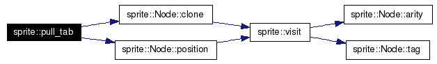
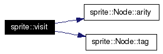

Classes | |
| struct | sprite::RuntimeError |
| Thrown to indicate a runtime error in the execution system. More... | |
| struct | sprite::PoolItem |
| An item in the computation pool. | |
| struct | sprite::ComputationPool |
| A computation pool. | |
| struct | sprite::YieldHandler |
| Base of a class that handles computation results as they are generated. More... | |
| struct | sprite::YieldHandler_< OutputIterator > |
| A concrete YieldHandler for a particular output iterator type. More... | |
| struct | sprite::YieldHandler_< void > |
| A yield handler that simply discards the output. More... | |
| struct | sprite::Fingerprint |
| A fingerprint specification. More... | |
| struct | sprite::Node |
| An expression node. More... | |
| struct | sprite::Node_< Payload > |
| A complete node. The payload contains tag-specific data. More... | |
| struct | sprite::NodePtr |
| A reference-counting pointer for Node objects. More... | |
| struct | sprite::Program |
| A program definition. More... | |
| struct | sprite::rewrite< OPER > |
| Rewrites a node to an OPER node. More... | |
| struct | sprite::rewrite< CTOR > |
| Rewrites a node to a CTOR node. More... | |
| struct | sprite::rewrite< FAIL > |
| Rewrites a node to FAIL. More... | |
| struct | sprite::rewrite< CHOICE > |
| Rewrites a node to CHOICE. More... | |
| struct | sprite::rewrite< FWD > |
| Rewrites a node to FWD. More... | |
| struct | sprite::rewrite< INT > |
| Rewrites a node to INT. More... | |
| struct | sprite::rewrite< FLOAT > |
| Rewrites a node to FLOAT. More... | |
| struct | sprite::Loader |
| Interface to the module loader. More... | |
| struct | sprite::Module |
| Interface to a module. More... | |
| struct | sprite::UserModule |
| A basic implementation of the Module interface. More... | |
Typedefs | |
|
typedef boost::uint_t< 32 >::exact | uint32 |
| typedef Node_< payloads::Unused<> > | AbstractNode |
| A complete node where the payload is unknown. | |
| typedef Node_< payloads::InPlace< 0 > > | InPlaceNode0 |
| A complete node with exactly zero children. | |
| typedef Node_< payloads::InPlace< 1 > > | InPlaceNode1 |
| A complete node with exactly one child. | |
| typedef Node_< payloads::InPlace< 2 > > | InPlaceNode2 |
| A complete node with exactly two children. | |
| typedef Node_< payloads::ChildList > | ChildListNode |
| A complete node with more than two children. | |
| typedef Node_< payloads::Choice > | ChoiceNode |
| A complete node representing a choice. | |
| typedef Node_< payloads::Fwd > | FwdNode |
| A complete node representing a forward reference. | |
| typedef Node_< payloads::Int > | IntNode |
| A complete node representing an integer. | |
| typedef Node_< payloads::Float > | FloatNode |
| A complete node representing a floating-point value. | |
| typedef tr1::function< void(Node &) | h_func_type ) |
| The type of an H function. | |
Enumerations | |
| enum | BuiltinOp { OP_INT_ADD, OP_INT_SUB, OP_INT_MUL, OP_INT_DIV, OP_FLOAT_ADD, OP_FLOAT_SUB, OP_FLOAT_MUL, OP_FLOAT_DIV, OP_END } |
| The built-in operations. | |
| enum | TagValue { FAIL = 0, OPER, CHOICE, FWD, INT, FLOAT, CTOR } |
| Identifies the type of a node. CTOR must be last! More... | |
| enum | TraceOption { NO_TRACE = false, TRACE = true } |
| Indicates whether tracing is enabled. | |
| enum | ChoiceDirection { LEFT = 0, RIGHT = 1 } |
Functions | |
| template<BuiltinOp Op> | |
| void | h_func (Node &node) |
| Implements the H function for a built in operation. | |
| TagValue | make_ctor_tag (int i) |
| Generates a constructor tag. | |
| bool | is_ctor (TagValue x) |
| Indicates whether a tag represents a constructor (built-in or not). | |
| bool | is_builtin (TagValue x) |
| Indicates whether a tag represents a built-in type. | |
| void | execute (Program const &pgm, Node &goal, YieldHandler const &out, TraceOption trace) |
| Execute a goal in the context of the given program. | |
| void | print_node (Node const &node) |
| Print an expression. | |
| void | execute (Program const &program, Node &goal, TraceOption trace) |
| template<typename OutputIterator> | |
| void | execute (Program const &pgm, Node &goal, OutputIterator out, TraceOption trace=NO_TRACE) |
| Alternate form of execute; results are written to the given iterator. | |
| bool | is_norm (Node const &node) |
| Traverses an expression and returns true if it is found to be in cnf. | |
| void | pull_tab (Node &g, NodePtr const &p) |
| Performs the pull-tab transformation. | |
| void | head_normalize (Node &node) |
| The head-normalizing (H) function from the fair scheme. | |
| void | fair_normalize (Fingerprint const &fp, Node &node) |
| The normalizing (N) function from the fair scheme. | |
| BOOST_STATIC_ASSERT (sizeof(AbstractNode)==NODE_BYTES) | |
| BOOST_STATIC_ASSERT (sizeof(InPlaceNode0)==NODE_BYTES) | |
| BOOST_STATIC_ASSERT (sizeof(InPlaceNode1)==NODE_BYTES) | |
| BOOST_STATIC_ASSERT (sizeof(InPlaceNode2)==NODE_BYTES) | |
| BOOST_STATIC_ASSERT (sizeof(ChildListNode)==NODE_BYTES) | |
| BOOST_STATIC_ASSERT (sizeof(ChoiceNode)==NODE_BYTES) | |
| BOOST_STATIC_ASSERT (sizeof(FwdNode)==NODE_BYTES) | |
| BOOST_STATIC_ASSERT (sizeof(IntNode)==NODE_BYTES) | |
| BOOST_STATIC_ASSERT (sizeof(FloatNode)==NODE_BYTES) | |
| bool | skip_fwd_ref (NodePtr &ptr, Node &ref) |
| Tells NodePtr how to skip FWD nodes. | |
| template<typename Visitor> | |
| Visitor::result_type | visit (Visitor const &visitor, Node const &node) |
| Unary visitation; calls visitor((Type)(node)). | |
| template<typename Visitor> | |
| Visitor::result_type | visit (Visitor const &visitor, Node &node) |
| Non-const form of visitation. | |
| template<typename Visitor> | |
| Visitor::result_type | visit (Visitor const &visitor, Node const &lhs, Node const &rhs) |
| Binary visitation; calls visitor((TypeLhs)(lhs), (TypeRhs)(rhs)). | |
| template<typename Visitor> | |
| Visitor::result_type | visit (Visitor const &visitor, Node &lhs, Node &rhs) |
| Non-const form of binary visitation. | |
Variables | |
| h_func_type | builtin_h [OP_END] |
| The table of built-in H routines. | |
| std::string | builtin_oper [OP_END] = { "+", "-", "*", "/", "+", "-", "*", "/" } |
| The tables of built-in operation labels. | |
| boost::object_pool< AbstractNode > | node_allocator |
| Global memory pool for allocating nodes. | |
| Program const * | g_program = NULL |
| Global pointer to the currently executing program. | |
| size_t const | NODE_BYTES = 32 |
| The size of a complete node. | |
| rewrite< CTOR > const | rewrite_ctor = rewrite<CTOR>() |
| Rewrites a node to type CTOR. | |
| rewrite< OPER > const | rewrite_oper = rewrite<OPER>() |
| Rewrites a node to type OPER. | |
| rewrite< FAIL > const | rewrite_fail = rewrite<FAIL>() |
| Rewrites a node to type FAIL. | |
| rewrite< CHOICE > const | rewrite_choice = rewrite<CHOICE>() |
| Rewrites a node to type CHOICE. | |
| rewrite< FWD > const | rewrite_fwd = rewrite<FWD>() |
| Rewrites a node to type FWD. | |
| rewrite< INT > const | rewrite_int = rewrite<INT>() |
| Rewrites a node to type INT. | |
| rewrite< FLOAT > const | rewrite_float = rewrite<FLOAT>() |
| Rewrites a node to type FLOAT. | |
|
|
A complete node representing a forward reference. This is simply a node that refers to another, which sometimes comes up during rewriting. |
|
|
Identifies the type of a node. CTOR must be last! The constructors for any type are assigned the sequential tags CTOR, CTOR+1, CTOR+2,... Said another way, this type is abused in that any value >= CTOR can be a valid TagValue. Definition at line 66 of file common.hpp. Referenced by make_ctor_tag(), and sprite::Node::tag(). |
|
||||||||||||||||||||
|
Execute a goal in the context of the given program. This is the the primary entry point to the execution system. Execution proceeds in-place, meaning that the goal expression will likely be modified.
Definition at line 102 of file exec.cpp. References sprite::Fingerprint::at(), fair_normalize(), g_program, sprite::Fingerprint::has(), sprite::Node::id(), is_norm(), sprite::Fingerprint::resize(), sprite::Fingerprint::set(), sprite::Fingerprint::size(), sprite::Node::tag(), and sprite::YieldHandler::yield(). |
Here is the call graph for this function:
|
|
The head-normalizing (H) function from the fair scheme. This is a generic H function that dispatches to the correct implementation for the given operation. The H.6 rule, which ignors constructor-rooted expressions, is implemented here so that user-compiled H rules can ignore it. Definition at line 139 of file exec.hpp. References g_program, sprite::Node::id(), sprite::Program::oper, and sprite::Node::tag(). Referenced by fair_normalize(), and h_func(). |
Here is the call graph for this function:
|
|
Print an expression.
|
|
||||||||||||
|
Performs the pull-tab transformation.
Definition at line 120 of file exec.hpp. References sprite::Node::clone(), sprite::Node::position(), and rewrite_choice. Referenced by fair_normalize(), and h_func(). |
Here is the call graph for this function:

|
||||||||||||||||||||
|
Binary visitation; calls visitor((TypeLhs)(lhs), (TypeRhs)(rhs)). Determines the type of each node, then calls the visitor with both nodes cast to those types. Rather than support all four possible overloads related to the const qualifier on Node arguments, just support the cases where both are qualified or neither one is. |
|
||||||||||||||||
|
Unary visitation; calls visitor((Type)(node)). Determines the type of the node, based on its tag and arity, then calls the visitor with the node cast to that type. Definition at line 18 of file visit.hpp. References sprite::Node::arity(), and sprite::Node::tag(). Referenced by sprite::Node::clone(), sprite::Node::iter(), sprite::Node::operator[](), and sprite::Node::position(). |
Here is the call graph for this function:

|
|
Initial value:
{
&h_func<OP_INT_ADD>
, &h_func<OP_INT_SUB>
, &h_func<OP_INT_MUL>
, &h_func<OP_INT_DIV>
, &h_func<OP_FLOAT_ADD>
, &h_func<OP_FLOAT_SUB>
, &h_func<OP_FLOAT_MUL>
, &h_func<OP_FLOAT_DIV>
}
Definition at line 189 of file builtins.cpp. |
|
|
The size of a complete node. Constrining every complete node type to have the same size simplifies memory pooling and rewriting. |
 1.3.9.1
1.3.9.1